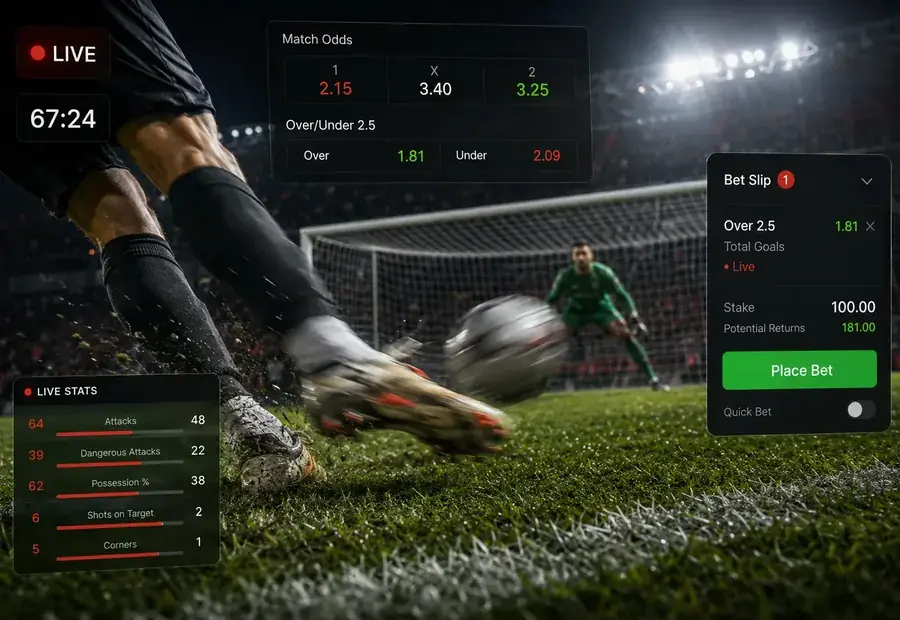

Rabona Kuwait: your shortcut to the sportsbook, app and live odds
Looking at Rabona for the first time? You're in the right place. We'll walk you through what's on offer - the welcome bonuses (yes, they're worth a look), how the live betting actually works, what payment methods get your money in and out fastest, and what to watch out for before you click "deposit". No fluff, no salesman act. Just what you need to know. 18+.
- 40+Sports and leagues
- 200+Markets on big games
- 24/7Live chat support

What you actually get at Rabona
Four things matter when you sign up. Here they are, straight up.
Big sports menu
Football is the main event - Premier League, La Liga, Champions League, Saudi Pro League, World Cup qualifiers. Plus tennis, basketball, cricket, UFC and eSports. Top matches get 200+ markets.
App that doesn't suck
Android APK and iOS web app. Bet slip, live odds, deposits and Face ID login all in one place. Works on phones from 2017 onwards.
30-second sign-up
Email, password, currency, done. KYC documents come later, only when you go to withdraw. You can place your first bet within a minute of registering.
Three welcome bonuses
Pick one: 100% up to €500 + 200 free spins (casino), 200% up to 3,000 USDT (crypto casino), or 100% up to 200 USDT (crypto sports). You can't claim two.
Read the small print before you opt in
Bonuses look great on the banner. The thing nobody mentions: every offer has a wagering requirement. The Rabona welcome bonus needs you to roll the bonus amount over 6 times before you can withdraw, and you've got 14 days to do it. Bets must be at odds of 1.80 or higher to count. Miss the deadline and the bonus disappears. That's not a scam - it's how every sportsbook works. Just know it before you click "claim".
Welcome bonuses
| Offer | You get | Best for | Min deposit |
|---|---|---|---|
| Casino welcome | 100% match up to €500 + 200 free spins | Slots and table games players paying with cards or e-wallets | €20 |
| Casino crypto welcome | 200% match up to 3,000 USDT | Heavy casino players depositing in BTC, ETH or USDT | 20 USDT |
| Sport crypto welcome | 100% match up to 200 USDT | Sports bettors who already use crypto wallets | 20 USDT |

Live betting that keeps up with the game
The fun stuff happens after kick-off. A red card flips the next-goal market in two seconds. A surprise penalty sends over/under odds flying. Rabona's live tree updates as fast as the match, and you can cash out a winning bet early if you don't want to sweat the last ten minutes.
- Football, basketball, tennis and ice hockey with live odds during every match
- Single bets, accumulators and same-game multis on one slip
- Match tracker with shots, possession and dangerous attacks
- Cash out on most singles and accas - take the money before time runs out
The Rabona app on your phone
If you bet from your phone (and most people do), grab the app. It's lighter than the mobile site, supports Face ID and fingerprint login, and you can place a live bet in three taps. Android users download the APK directly from Rabona - Google Play doesn't allow real-money sportsbooks. iPhone users add the Rabona mobile site to the home screen and it behaves like a native app.
- Full sportsbook and casino in your pocket
- Biometric login - no more typing your password every time
- Push notifications for bet results and bonus drops (you can switch them off)
- Built-in deposit limits and time-out controls

Sign up or log in: 60 seconds either way
If you're new, you'll be placing your first bet faster than it takes to make coffee. If you're back, biometric login on the app makes it instant.
Opening a new account
- 1
Hit "Register"
Top right of the homepage. The form's short - email, password, currency, country, date of birth. That's it.
- 2
Pick your currency carefully
You can't change it later. USD or EUR are flexible. If you'll deposit mostly in crypto, USDT is the cleanest match.
- 3
Set a deposit limit on day one
Before you even fund the account, go to Settings → Responsible Gaming and cap your weekly deposit. Future-you will thank you.
Logging back in
- 1
Use the official link
Phishing sites copy the Rabona logo and steal credentials. Bookmark the real page and only log in from the bookmark.
- 2
Forgotten password?
One click, password reset email arrives in under a minute. Don't smash the login button five times - it triggers a 15-minute lockout.
- 3
Turn on biometrics in the app
Face ID or fingerprint means you skip the password forever. It's safer than typing on a shared Wi-Fi network.
What you can bet on
Football is where Rabona puts its energy - and it shows. Champions League nights have 200+ markets per match. Beyond that, here's the full menu.
| Sport | Main leagues and events | Typical market depth |
|---|---|---|
| Football | English Premier League, La Liga, Serie A, Bundesliga, Ligue 1, UEFA Champions League, Europa League, Saudi Pro League, AFC Asian Cup, FIFA World Cup qualifiers, Egyptian Premier League | 200+ markets per top match |
| Basketball | NBA, EuroLeague, EuroCup, Spanish ACB, NCAA, FIBA continental cups | 80 - 140 markets |
| Tennis | ATP, WTA, Grand Slam events (Australian Open, Roland Garros, Wimbledon, US Open), ATP Masters 1000, Challenger Tour | 40 - 80 markets |
| Ice hockey | NHL, KHL, Swedish SHL, Finnish Liiga, IIHF World Championship | 60 - 110 markets |
| Cricket | IPL, ICC World Cup, T20 internationals, PSL, Big Bash League | 30 - 70 markets |
| Combat sports | UFC, Bellator, top professional boxing cards | 20 - 45 markets |
| eSports | CS2, Dota 2, League of Legends, Valorant, Call of Duty | 15 - 35 markets |
| Virtual sports | Virtual football, basketball, horse racing, dog racing - round the clock | 10 - 25 markets |
Some leagues come and go depending on the season and broadcasting deals in your country. The list updates every Monday.
Bet types, plain English
If you're new to the bet slip, these are the terms you'll see most. Skim once and they'll stick.
- Single (1X2)
- Pick a home win, a draw or an away win. One selection, simplest bet. Stake × odds = your payout if you're right.
- Double chance
- You cover two of the three outcomes, say "home or draw". Odds are lower, but you only lose if the away team wins outright.
- Over / Under
- Bet on whether goals (or points, sets, corners) will be more or less than the line. "Over 2.5 goals" wins if there are 3 or more.
- Both teams to score
- Will each side score at least once? Yes or no. That's it.
- Handicap
- The favourite starts with a virtual deficit (1.5 goals, for example). If Man City beat Brentford 2-0, a 1.5 handicap on City wins. A 2-1 win? You lose.
- Asian handicap
- No-draw version of the handicap. Quarter lines split your stake in two, so you can half-win or get a refund.
- Accumulator (parlay)
- Stack multiple picks on one slip. Odds multiply, but every leg has to win. One loser kills the whole ticket.
- System bet
- Like an acca, but you don't need every leg to land. A 2/4 system on four picks still pays if just two of them win.
- Player props
- Bets on one player, Salah to score, Curry over 3.5 threes, Khabib by submission. Wins regardless of the final score.
- Live / in-play
- Betting after the match starts. Odds move every few seconds. Best for people who actually watch the game.
- Cash out
- An "early settle" button. Take the money before the match ends. Usually less than the full win, but more than zero if it's going your way.
- Bet builder
- Combine markets from the same match into one boosted price. "Liverpool to win + over 2.5 goals + Salah to score" on one slip.
How you put money in and take it out
The fastest method depends on whether you've got a card handy, an e-wallet set up, or a crypto wallet. Here's what to expect.
| Method | Min deposit | Min withdrawal | How long it takes | Fees |
|---|---|---|---|---|
| Visa / Mastercard | 10 USD | 20 USD | Deposit: instant • Withdraw: 1 to 3 days | None from Rabona |
| Skrill | 10 USD | 20 USD | Deposit: instant • Withdraw: under 24 hours | None from Rabona |
| Neteller | 10 USD | 20 USD | Deposit: instant • Withdraw: under 24 hours | None from Rabona |
| EcoPayz | 10 USD | 20 USD | Deposit: instant • Withdraw: under 24 hours | None from Rabona |
| Jeton Wallet | 10 USD | 20 USD | Deposit: instant • Withdraw: under 24 hours | None from Rabona |
| Bitcoin (BTC) | 20 USD | 50 USD | Deposit: 1 confirmation • Withdraw: under 24 hours | Network fee only |
| Ethereum (ETH) | 20 USD | 50 USD | Deposit: 1 confirmation • Withdraw: under 24 hours | Network fee only |
| USDT (Tether) | 20 USD | 50 USD | Deposit: 1 confirmation • Withdraw: under 24 hours | Network fee only |
| Bank wire | 50 USD | 100 USD | Deposit: 1 to 2 days • Withdraw: 3 to 7 days | Your bank may charge |
Want your money fast? Use the same method for deposits and withdrawals. Anti-fraud checks fly through when the names match.
Depositing for the first time
- Log inOpen Rabona and sign in with the credentials you just created.
- Click the wallet iconTop right corner. You'll land on the Deposit tab automatically.
- Pick your methodCard, Skrill, Neteller, crypto, whatever you've got set up.
- Enter how muchMinimum's shown on screen. If you want the welcome bonus, tick the opt-in box before you confirm.
- Approve in your bank or walletCards and e-wallets land instantly. Crypto takes one network confirmation, usually 10-30 minutes.
Cashing out your winnings
- Verify your account firstThis is the step everyone skips and then regrets. Upload your ID, address proof and a selfie before you try to withdraw. Saves you days.
- Open Cashier, then WithdrawSame screen as deposits, different tab.
- Type the amountMinimum is 20 USD on e-wallets, 50 USD on crypto, 100 USD on bank wire.
- Wait for the green lightRabona approves payouts in under 24 hours. After that, your method takes over (banks are slowest, crypto is fastest).
- Money landsIf it's not there in the window above, hit live chat with your transaction ID. They'll find it.
The KYC step you can't skip
Every regulated sportsbook checks who you are. Get it done in week one, never think about it again. Skip it and your first withdrawal will sit "under review" for days.
Your ID
Passport, national ID or driver's licence. Photo it on a dark surface, no flash glare, all four corners visible, and make sure it's not expired.
Address proof
A utility bill or bank statement from the last 3 months with your name and address on it. Screenshots from the bank app work too.
A selfie
Holding your ID next to your face. Daylight, no filters, no Snapchat dog ears. Takes 10 seconds.
Payment proof
If you used a card, cover the middle 8 digits and the CVV before you photo it. Crypto and e-wallet users send a screenshot of the wallet address.
Approval usually takes 24-48 hours. After that you're set for life - no more checks unless you change your address or bump up the deposit limits.
The good, the meh, and the small print
Every sportsbook has trade-offs. Here's our honest take after spending time inside Rabona.
What we like
- Football coverage is genuinely deep - Premier League, La Liga, Saudi Pro League, all the way down to Egyptian top flight
- Welcome bonus is split across your first four deposits, so you're not pressured to drop your whole budget at once
- Crypto deposits land fast, withdrawals do too - under 24 hours in most cases
- Cash out works on most markets, not just the obvious ones
- Bet builder lets you stack same-game picks without opening five tabs
- Live chat actually replies in under three minutes
- Arabic and English support out of the box, with translators on hand
- Real responsible gaming tools - deposit caps, time-outs, self-exclusion in two clicks
What to watch out for
- Welcome bonus has a 6× wagering requirement in 14 days. Doable, but not effortless
- Some leagues and promos aren't available in every country - you'll see fewer markets in restricted regions
- Live streaming isn't everywhere. Big matches yes, lower divisions often no
- If you don't verify your account upfront, your first withdrawal will sit "under review" for days
- While the bonus is active, max bet caps out at around 5 USD per slip. Easy to miss in the small print
- Bank wires are slow. If you need money fast, stick to e-wallets or crypto
Stuck? Here's how to get help
Three options, depending on how urgent it is. Live chat is fastest, every time.
Live chat
Open from any page when you're logged in. Use this for stuck deposits, missing bonuses, withdrawal questions, login lockouts - basically anything that needs solving right now.
For uploading KYC documents, complaints you want on record, or detailed account history requests. Slower, but you get a written reply you can refer back to.
Help centre
Searchable FAQ for the basics: how to deposit, how the bonus works, how to set limits. Faster than waiting for an agent if your question is common.
Pro tip when you contact support: have your username and the transaction ID ready. Skip your password, agents never need it. One clean message saves a back-and-forth.
Will the app work on your phone?
If your phone's from 2017 or newer, almost certainly yes. Here are the specifics.
| Your device | Minimum OS | Size | How to install |
|---|---|---|---|
| Android | Android 6.0 or newer (most phones from 2016+) | About 28 MB | Download the APK from the Rabona site. You'll need to allow installs from unknown sources - that's normal, the Play Store doesn't list real-money sportsbooks. |
| iPhone / iPad | iOS 13 or newer (iPhone 6s and up) | About 42 MB | Open Rabona in Safari, tap Share, then "Add to Home Screen". You get a full app experience without the App Store. |
| Older phone or no install | Any modern browser | Nothing to install | Just open rabona-kuwait.com on your phone. The site works fine - you only miss biometric login and push notifications. |
One warning: only grab the APK from the official Rabona link. Fake mirrors on shady forums sometimes ship modified files that steal your login. If a download looks "easier" or asks for weird permissions, close it.
Questions people actually ask
The ones that come up over and over in live chat. If yours isn't here, hit support - they're quick.
Can I use Rabona from Kuwait?
Rabona is licensed outside Kuwait, and Kuwaiti law doesn't license online gambling locally. Whether you choose to play is your call - just make sure you're 18+ and you understand the legal situation where you are.
What currency should I pick?
USD or EUR if you'll deposit with cards or e-wallets. USDT if you'll mostly use crypto. You can't change currency later, so think it through. Most KW users go with USD.
How long does the welcome bonus take to clear?
Roll the bonus amount over 6 times on bets at odds of 1.80 or higher. You've got 14 days. With sensible stakes, that's 30-ish bets, so 2-3 per day clears it comfortably.
Can I open more than one account?
No. One account per person, per address, per device, per payment method. Open a second one and both get closed with the balance frozen. Not worth it.
My deposit hasn't arrived. Now what?
Wait 10 minutes for cards and e-wallets, up to an hour for crypto, up to 48 hours for bank wires. If it's still missing, message live chat with the date, amount and transaction ID. Almost always sorted in one chat.
Why is my withdrawal stuck on "under review"?
One of three things: your KYC isn't complete, your bonus wagering isn't done, or you're trying to withdraw to a different method than you deposited with. Fix the right one and it moves.
App or mobile site - which is better?
Both use the same backend, so it's down to convenience. The app adds Face ID, fingerprint login and push notifications. The mobile site needs no install and updates automatically.
Can I bet after the match has started?
Yes, that's live betting. Odds change every few seconds. The slip locks for a moment around goals and red cards while prices reset - that's normal, not a bug.
What's cash out actually worth?
It's the bookmaker's offer to buy out your bet early, based on how likely it is to win right now. If your team's up 2-0 with 10 minutes left, cash out is high. If they've just conceded, it drops. You decide if it's worth taking.
Is there live streaming?
For top football, tennis and basketball matches, yes - usually if you've got a funded account or an open bet on the game. For lower divisions and niche sports, it depends on broadcasting rights in your country.
Can I mix live and pre-match picks in one accumulator?
Yes. The slip accepts both. If a live price changes while you're confirming, the slip locks for a couple of seconds and asks if you want the new odds. Click accept or cancel.
What's the biggest bet I can place?
Depends on the sport, the league and the market - and you'll always see the cap on the slip before you confirm. While your welcome bonus is active, max stake per slip is usually 5 USD. After it clears, normal limits apply.
How do I set a deposit limit?
Settings → Responsible Gaming → Deposit Limits. Pick daily, weekly or monthly. Reductions kick in straight away. Increases need a 7-day cool-off - that's the point of the feature.
How do I close my account?
Settings → Account → Close, or message live chat. You can choose a 24-hour time-out, a 6-month break, or a permanent close. Whatever's in your balance comes back to your verified payment method.
I think I have a problem. Where can I get help?
Start with the tools inside your account - deposit limits and self-exclusion are right there. For confidential outside help, GamCare (gamcare.org.uk), Gambling Therapy (gamblingtherapy.org, which has Arabic support) and BeGambleAware (begambleaware.org) are free and don't share data with anyone.